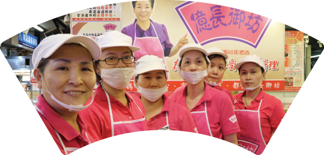

億長御坊大事記

朱億長女士開始於南門市場試賣熟食
朱億長女士創立「億長御坊」品牌
10月：進駐台北101中Jasons Market
Place成為第一家從傳統市場走進百貨熟食櫃的店家
Place成為第一家從傳統市場走進百貨熟食櫃的店家
12月：進駐新光三越天母店
9月：進駐新光三越信義A4店
6月：榮獲臺北市政府舉辦傳統市場節
「天下第一攤」金牌賞
「天下第一攤」金牌賞
7月：鴻海郭台銘總裁婚宴指定菜色
9月：年代專訪－年代美食印象：
「市場裡的天下第一攤」
「市場裡的天下第一攤」
5月：進駐BELLAVITA
6月：榮獲臺北市政府舉辦傳統市場節
「天下第一攤」
「天下第一攤」
2月：TVBS專訪－一步一腳印．發現新台灣
3月：榮獲臺北市政府傳統市場節
「專家評選推薦獎」
「專家評選推薦獎」
4月：榮獲臺北市政府舉辦傳統市場節
「天下第一攤」金牌賞
「天下第一攤」金牌賞
11月：榮獲經濟部頒發樂活四星名攤
4月：榮獲臺北市政府舉辦傳統市場節
「天下第一攤」金牌賞
「天下第一攤」金牌賞
11月：成立中央廚房並通過HACCP認證
11月：進駐新光三越站前店
4月：榮獲臺北市政府舉辦傳統市場節
「天下第一攤」金牌賞
「天下第一攤」金牌賞
8月：獲邀參加香港美食展
10月：進駐板橋大遠百店
7月：獲邀參加天津臺灣名品展
9月：進駐臺北SOGO復興館
4月：獲得YAHOO超級商城超級金店
「2016超級服務獎」
「2016超級服務獎」
9月：取得TTQS人才發展品質管理系統
門檻認證
門檻認證
10月：SOGO BR4 門市重新裝潢開張
12月：取得ISO22000
食品安全衛生管理系統認證
食品安全衛生管理系統認證
4月：藜麥饅頭、養身藜麥豆沙粽、香辣馬鈴薯絲等新品上市
回最上